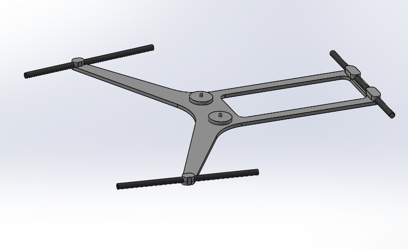
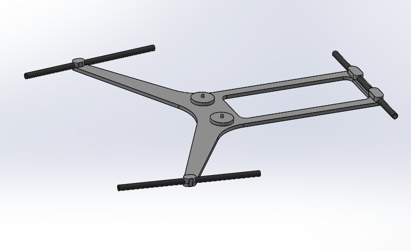

NastallisetLiukuesteet
Ryhmäprojekti, Kevät 2019

Talvisin tiet voivat olla liukkaita, varsinkin Suomessa. Minulla on koira, joten käytän häntä lenkillä säästä riippumatta. Omistin silikonista valmistetut liukuesteet, jotka olivat painavat, vaikea laittaa jalkaan ja ottaa pois, sekä irtosivat helposti kävellessä, juoksemisesta puhumattakaan. Tästä syystä päätimme opiskelukaverini kanssa suunnitella parannellut versiot Innovative Product Development -kurssia varten.
Perusideana oli suunnitella ja valmistaa liukuesteiden kehittynyt prototyyppi, jotka olisi erittäin helppo laittaa jalkaan ja ottaa pois, säilyttää taskussa tai pussukassa, ja jotka pysyisivät jalassa myös juostessa. Markkinoilla on paljon erilaisia vaihtoehtoja tarjolla, mutta suurin osa niistä on painavia, vaikea asettaa paikalleen ja eivät useisiin eri kenkätyyppeihin tai -kokoihin.

Aloitimme tekemällä erilaisia mock-up versioita liukuesteistä, mm. nailon-langasta tehdystä verkosta, joka kietoutuisi kengänpohjan ympärille. Tästä saimme idean valmistaa samalla perusidealla toteutettavan silikonisen version, joka olisi kevyt, kestävä ja joustava.
Lopulta kehitimme toimivan prototyypin, joka valmistettiin silikonista valamalla alumiinimuotissa. Metalliset piikit upotettiin silikoniin valamisvaiheessa. Liukuesteiden kiristämistä varten käytimme Salomon Quick Lacea, sillä meillä ei ollu mahdollisuutta valmistaa omaa kiristysmekanismia joka toimisia yhtä nopeasti.

 

Projektin rajoittuneisuuden takia tarkoitus oli luoda vain toimiva prototyyppi, ja tässä onnistuimme. Idealle on kuitenkin vielä kehityspohjaa, kuten kehittää oma pikakiinnitysjärjestelmä ja parantaa prototyypin geometriaa, jotta se pysyisi paremmin jalasa juostessa. Prototyyppiä testattiin kävelyillä, jolloin se toimi hyvin, mutta juoksutestin aikana yksi siivekkeistä katkesi, jonka jälkeen prototyyppi juotui roskakoriin.